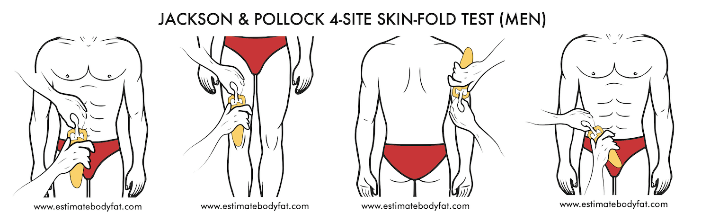
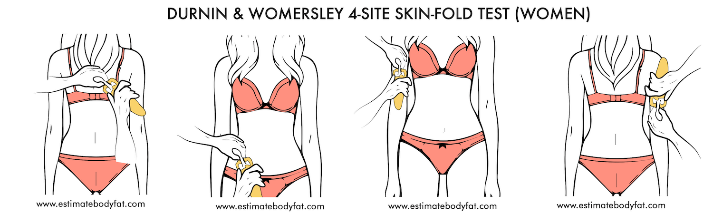
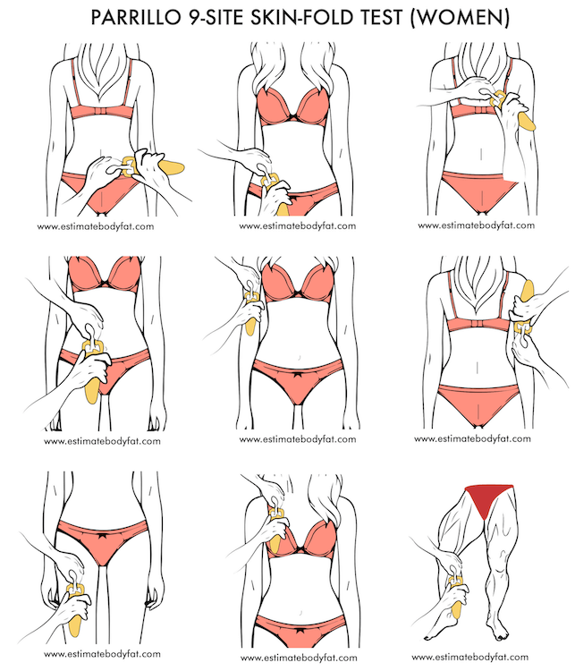

7 Ways to Measure Body Fat Percentage
Body fat percentage is the total fat in the body divided by the total body mass and expressed as a percentage. It is an important metric to understand as overall weight by itself is not representative of your health.
You can be the same height and same weight as your friend yet differ completely when it comes to body fat percentages. You might be carrying significantly more fat than the other person which could put you at greater risk of illness.

Therefore, having a good idea of where you stand is important in tracking your overall fitness progress and health. You can obtain your body fat percentage for small fee.
It is important to note that body fat percentage is not a be all metric to gauge overall health. You can definitely have a highly than normal body fat percentage and still be extremely healthy and on the other hand have a very low
body fat percentage and live an extremely unhealthy lifestyle and be much more prone to illness.
However, here are 7 ways of obtaining your body fat percentage:
1. A.I. Body Fat Calculator
2. Anthropometric Methods (Standard Online Body Fat Calculator)
3. Dexa Scans
4. Hydrostatic Weighing
5. Air Pods
6. Bio Impedance Scales
7. Skinfold Methods (Body Fat Calipers)
A.I. Body Fat Percentage Calculator
The A.I. Body Fat Calculator was built using a convolutional neural network (CNN) and simulates the way
human memory works. The reason you can remember an individual in your life is that every time you see that individual, a neuron fires in your visual cortex reminding you of that person.
Based on that logic, the A.I. Body Fat Calculator was trained to recognize the unique characteristics of body fat percentages at different ranges for both men and women.

All you need to do is upload an image in which you flex and the application takes care of the rest. The answer provided is the closest possible body fat percentage range it has been trained against. It should be noted that based on the limited availability
of data, the margin of error can be +- 3.5%.
The answer provided by the A.I. Body Fat Percentage Calculator is an overall estimate of your total body fat percentage. It is unable to provide a breakdown between your visceral and subcutaneous fats.
Factors such as age, the aftereffect of extreme weight loss and liquid or food consumption prior to use have the potential of skewing results.
The great part about this body fat calculator is that it is easy to use and you get an answer within 5 seconds.
Anthropometric Methods (Standard Online Body Fat Calculator)
Anthropometric methods use an individual’s age, height, and a few body circumference measurements to obtain an overall body fat percentage.
Some anthropometric methods calculate an individual’s body density first and use that number to then calculate the body fat percentage using the formula developed by Siri or Brozek (mentioned below).

Inaccuracies in this method arise from the cumulative nature of applying two separate statistical techniques and the accuracy of the actual measurement process itself. Also, the differences in an individual's fat distribution and shape
skew results.
Most Standard Online Body Fat Calculators using Anthropometric methods are based on equations developed for U.S. Army or U.S. Naval.
U.S. Army and U.S. Navy Body Fat Percentage Calculations
These methods involve measuring your height, circumference of the waist (around naval for men and shortest width for women), the circumference of the neck (below the larynx) and additionally the circumference of hips for women.
While taking these measurements, individuals are required to stand upright and have another individual take their measurements for them. This is simply to prevent any inaccuracies.
The Department of Defense uses 18% for men and 26% for women as the required standards. Individuals that fail to meet these ranges may be put on a weight loss program and required to measure their body fat percentages periodically.
The naval method first involves calculating an individual’s density and then using that in a final body fat percentage equation. The army method on the other hand simply requires the measurements to be inputted into the final body
fat percentage equation.
The U.S. Army and U.S. Navy Body Fat Percentage equations are as follows:
Men
Body Fat Percentage(U.S. Imperial System - measured in inches) = 86.010 * log10(waist-neck) - log10(height) + 36.76
Body Fat Percentage (Metric System - measured in cm) = 495/(1.0324 - 0.19077 * log10(waist-neck) +0.15456 * log10(height)) - 450
Women
Body Fat Percentage (U.S. Imperial System - measured in inches) = 163.205 x log10(waist + hip - neck) - 97.684 x log10(height) - 78.387
Body Fat Percentage (Metric System - measured in cm) = 495/(1.29579 - 0.35004 * log10(waist+hip-neck) +0.22100 * log10(height)) - 450
Make sure not to compress the skin when measuring your neck, waist or hips. It is probably best to take multiple measurements and then average those results. It is also important your final body fat percentage is still an estimate.
Based on an article by military times, the margin of error could be as high as +-15% with Dr. Jeffery Stout rating the overall score
as a D minus.
However, this number and grade have been fiercely disputed by military personnel.
Dexa Scans (Dual-Energy X-Ray Absorptiometry)

Source: Dual-Energy X-Ray Absorptiometry
Dual-Energy X - Ray (Dexa Scan) uses both high and low energy x-rays to break down your total lean muscle mass, bone density, total fat with type of fat (visceral
and subcutaneous), RMR, relative skeletal muscle index (RSMI) and where you stand compared to your age group and fitness level. It is one of the most accurate forms of fat detection.
Dexa Scan results were used as a reference point while building the dataset for Estimate Body Fat.
Dexa Scans are typically used to diagnose bone disorders such as osteoporosis but have become a favourite in the fitness community due to their accuracy. The only downside is that a single DEXA Scan will put you back by $150.
Hydrostatic Weighing
Hydrostatic Underwater Weighing uses the Archimedes principle of displacement that states “The buoyant force which water exerts on an immersed object is equal to the weight of water that the object displaces”. In this method, you sit on a chair that is submerged underwater.
Credit: Texas A&M
Water is less dense than fat tissue (approximately 8%) and even less compared to bone and lean muscle mass (approximately 15%). Essentially, fat will float in water compared to muscle tissue. Your body density is calculated when it displaces the water
in the tank. Once the body density has been determined, the body fat percentage is determined using the equations developed by Siri and Brozek, et al.
This method can only be done at a property sports medial facility under the supervision of trained personnel. The accuracy of this method is comparable to Dexa Scans and is considered one of the gold standards of determining your
body fat percentage with a margin of error of around 1%.
The equations are as follows:
Siri (1956): Body Fat Percentage = [4.950 /Density - 4.500]×100
Brozek et al. (1963): Body Fat Percentage = [4.570 /Density - 4.142]×100
Air Displacement Plethysmography (ADP) - Body Pod

Source: New Body Pod Enhances Body Composition Measurement
Air Displacement Plethysmography (ADP) is based on the same fundamental principles as the hydrostatic method of fat detection, but instead uses air rather than
water to calculate the density of a body.
It is a safe and non-invasive method to measure body fat; however, its accuracy declines when measuring extremely overweight or extremely lean individuals.
Similar to the hydrostatic method, ADP measures body density first by determining the volume of air that is displaced by the individual inside the chamber. Once the body density is determined, then the lean body mass and fat mass
are calculated.
Bioelectrical Impedance Analysis (BIA)

Bioelectrical
Impedance Analysis (BIA) works by sending a weak electric current through the body and measuring the speed at which the current is received.
Faster response time is indicative of a leaner physique because lean muscle mass conducts electrical impulses faster than fatty tissue. Thus, when there is more resistance to the electric current, this is suggestive of more body
fat.
BIA is a cheap and affordable way of determining body fat percentage; however, it is not as accurate as a DEXA scan. This accuracy can vary greatly depending on the brand of scale being used. Factors
such as meal times, dehydration, and time of exercise can also skew results.
Skinfold Method (Body Fat Calipers)

Our Skinfold Body Fat Caliper Calculator measures skin thickness in 3 to 9 different areas of the body. Depending on the method used, the pinch areas include the
chest, abdomen, midaxilla (middle of armpit), bicep, tricep, suprailiac (hip), calf, thigh, subscapular (lower tip of the shoulder blade), lower back.
The methods used in the caliper calculator include:
1. Jackson and Pollock 3-site skinfold test


2. Jackson and Pollock 4-site skinfold test


3. Jackson and Pollock 7-site skinfold test


4. Durnin and Womersley 4-site skinfold test


5. Parillo 9-site skinfold test


Ask someone to help you do this measurement and measure only one side of the body. This is fed into an equation developed by Jackson and Pollock to first get your body density and the results used to estimate your body fat percentage.
The margin of error is around +- 3%.
This method only measures subcutaneous fat and is therefore not the best method to employ. Skinfold calipers are cheap and easily accessible and thus make it a quick (maybe not as easy as our body fat calculator) way to gauge
body fat percentage.
The accuracy of the method can also vary on factors such as the intensity of the pinch and the skill level of the individual performing the measurement.
We also have pictures of men and women at different body fat percentages. This might be helpful in giving you a
good idea of where you currently stand.
Disclaimer
None of the website's content is meant to be taken as medical advice. Speak to your healthcare professional for medical advice
I Lov Guitars Inc. will not be held liable for any claim, damage or other liability arising from, out, or in connection with using this web application and its content.
As a way of generating revenue to sustain this web app, estimatebodyfat.com is a member of Amazon’s Affiliate program and Clickbank's Affiliate Program and may earn a commission if you decide to buy any of the products recommended.
Credits
Special thanks goes out to Rachel Thomas and Jeremy Howard from Fast A.I. without whom this web application would not be possible. This application is built based on Jeremy's Bear Classifier WebApp.
If you are interested in learning about Deep Learning and how you can use AI in your projects, Fast AI holds free courses anyone can take on their website. Please do give them a look if you are curious.
In addition to Fast
A.I., this web application also uses the Croppie Plugin and custom made Haar Cascades .
I would
also like to thank Dr. Jason Fung for writing such a life-changing book on solving Obesity and Harrison's Free tutorials on Haar Cascades
Images used on Estimate Body Fat have been obtained from Royalty Free Sites or purchased from Stock Repositories.
If you notice a discrepancy with anything, feel
free to send me a message at contact@estimatebodyfat.com